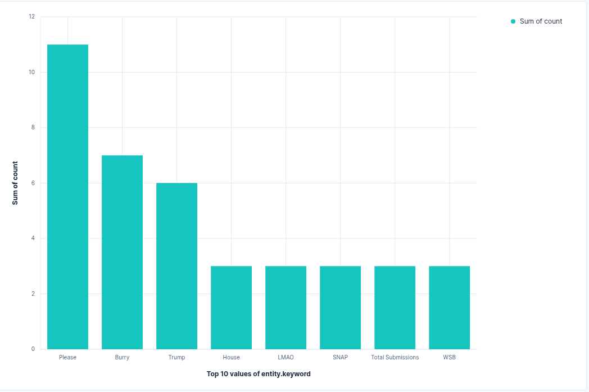
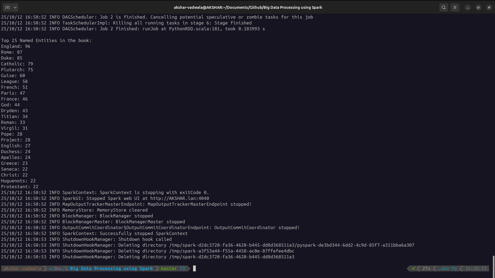
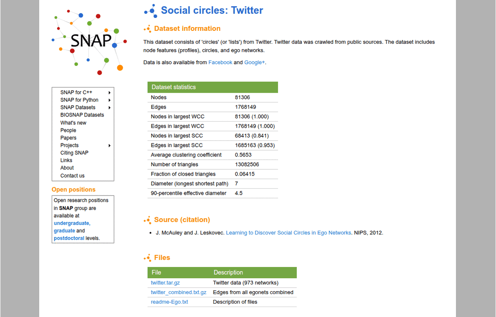
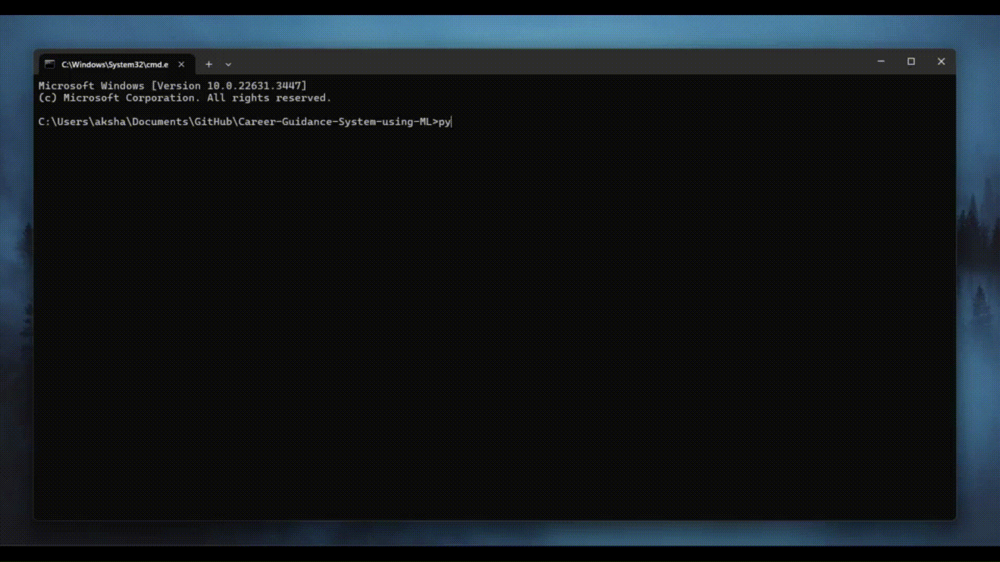
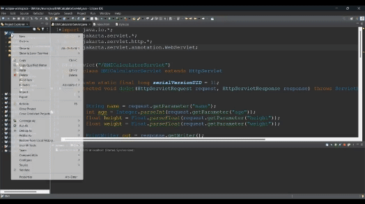

Akshar Vadwala
|Snapshot
Education
Master of Science in Computer Science
The University of Texas at Dallas | 2025 – 2027
🎓 GPA: 3.88
📍 Dallas, Texas
Bachelor of Engineering in Computer Engineering
The CVM University | 2021 – 2025
🎓 GPA: 3.94
📍 Anand, Gujarat
Experience
Projects
MOT Analytics
A scalable Multi Object tracking by detection pipeline designed for trajectory analytics in high density crowd environments.
The system accurately detects individuals and preserves their unique identities across complex occlusions and crossing trajectories using temporal motion prediction (Kalman Filter) and visual feature extraction (DeepSORT via ResNet18).
.gif)
Reddit NER Streaming
Real-Time Named Entity Recognition on Reddit Comments.
A continuous streaming pipeline that extracts Named Entities from live r/wallstreetbets comments. It leverages Kafka for message queuing and PySpark with NLTK for processing, visualizing entity frequency trends dynamically on a Kibana dashboard.

Big Data Text Processing
Large-scale natural language processing and information retrieval.
A distributed PySpark pipeline featuring two primary engines: a Named Entity WordCount that extracts and aggregates entities from Project Gutenberg texts, and a scalable TF-IDF movie plot search engine that ranks multi-term queries using Cosine Similarity.

Twitter Graph Analytics
Large-scale distributed graph processing using Apache Spark & GraphFrames.
Analyzes a real-world Twitter social network dataset containing millions of edges to uncover community structures and influential users. Implements heavy computational graph algorithms including Out/In-Degree analysis, PageRank, Connected Components, and Triangle Counting, heavily optimized using DataFrame caching, checkpointing, and edge sampling.

Career Recommendation ML System
Machine learning-powered educational stream recommendation system.
An end-to-end web application that recommends whether students should pursue Science, Arts, or Commerce streams based on their unique interests and academic history. The system features a custom computer-adaptive test interface that captures user metrics and processes them through a Random Forest model to deliver data-driven career path recommendations.

Network Attendance System
A 3-tier network-based attendance platform built from the ground up.
Eliminates manual tracking errors through a centralized architecture featuring dedicated dashboards for admins, faculty, and students. The system handles bulk user registration via CSV, secure automated password distribution via SMTP, and secure token-based attendance sessions with advanced filtering capabilities.

IoT Weather App
Real-time Android weather application powered by AWS IoT Core.
An end-to-end IoT solution that retrieves live sensor telemetry—including temperature, humidity, precipitation, and pressure via the lightweight MQTT protocol from IoT devices. The Android client features a robust interactive UI with secure user authentication, local profile management using SQLite, and a personalized data dashboard.
Resto Order Manager
Comprehensive Django web application for restaurant operations.
An end-to-end platform that streamlines online food ordering and delivery. It features a customer-facing portal with Stripe API integration for secure payments, alongside a robust administrative dashboard for managers to update menus, track orders in real-time, and generate business reports.

BMI Calculator
Web application for calculating Body Mass Index based on WHO guidelines.
A health utility application that processes user demographic and physical metrics to deliver an instant BMI calculation and health categorization. Built using classic Java Servlets and hosted on an Apache Tomcat server, demonstrating foundational backend web architecture.

Publications
Career Recommendation using Machine Learning for Secondary Education
Proposes an ML-based stream recommendation system for school students using a computer-adaptive test. Evaluates academic performance, aptitude, and interests to deliver personalized career path suggestions via Random Forest Regression — achieving MSE: 0.0983 and R²: 0.8636.
Network Based Smart Attendance System for Students
Presents a digital attendance system leveraging mobile devices and institutional Wi-Fi/local networks to automate student attendance. Reduces faculty workload, eliminates proxy attendance, and enables secure dashboard-accessible record-keeping via time-bound ID verification.
A Comprehensive Review of Digitalized Attendance Systems for Various Institutions
Reviews advancements in digital attendance across educational and workplace environments — covering RFID, Bluetooth, Wi-Fi, facial recognition, and biometric sensors. Highlights how AI, ML, and IoT integration enhances accuracy and reduces administrative overhead.